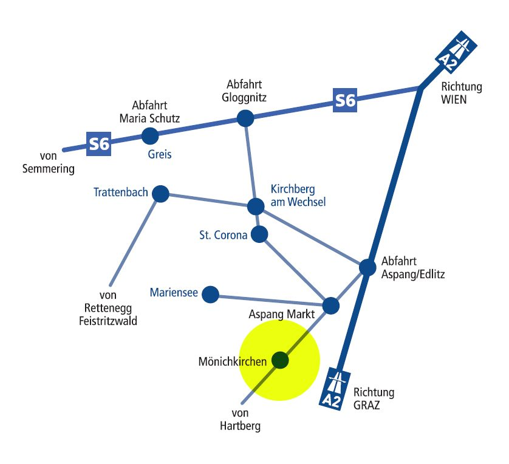

Über die B54
- Autobahn-Abfahrt aus Richtung Wien: Aspang-Edlitz
- Autobahn-Abfahrt aus Richtung Graz: Pinggau-Friedberg
- Weiter auf der Wechselpanoramastraße B54
Unverbindliche Gestaltungs-Vorschau · keine offizielle Website des Hotel Thier · erstellt von AVOS Solutions
Mit dem Auto über die Wechselpanoramastraße, mit der Bahn bis Aspang und weiter mit Bus oder hauseigenem Taxi — wir helfen gerne bei der Planung.
A-2872 Mönichkirchen 243
Niederösterreich, Österreich
Telefon +43 2649 281
Telefon mobil +43 664 1056480
Fax +43 2649 281 59
E-Mail office@hotelthier.at
Ihre Gastgeberfamilie Thier freut sich auf Sie.

Ja, die Badelandschaft mit Schwimmbad, Whirlpool, finnischer Sauna, Dampfkammer, Infrarotsauna und Ruhebereich steht unseren Hausgästen zur Verfügung — erreichbar direkt mit dem Personenlift von den Zimmern.
350 Meter. Ein gratis Schibus bringt Sie bequem hin und retour.
Ab 1.1.2024 € 2,90 pro Person und Tag.
Am Anreisetag sind die Zimmer ab 13.00 Uhr bezugsfertig. Am Abreisetag ersuchen wir unsere Gäste, die Zimmer bis ca. 10.00 Uhr vormittags zu räumen.
Ja. Gruppenpreise erstellen wir individuell — für Vereinsfahrten, Busreisen, Trainingslager, Seniorengruppen und Seminare. Details unter +43 (0) 2649 281 oder office@hotelthier.at.
Für Gruppen von 10 bis 60 Personen. Zur Ausstattung gehören Flipchart, Pinnwand und Videobeamer mit Leinwand.
Ja, seit dem Jahr 2022 erzeugen wir Strom und Wärme selbst: 110 kW/peak Photovoltaik mit Speicher, 360 kW Biomasse-Hackgut-Heizung, eigene Wasserversorgung und eine Wärmepumpe für Pool und Warmwasser im Sommer.
Küche, Service, Rezeption, Housekeeping oder Wellness: Wer gerne in den Bergen arbeitet und ein familiengeführtes Haus mit über 50 Zimmern sucht, ist bei uns richtig. Wir freuen uns über Ihre Initiativbewerbung.
Neue Funktion in dieser Vorschau: Die bestehende Website hat keinen Karrierebereich.